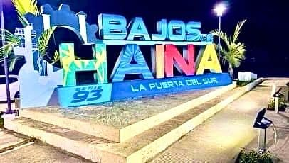
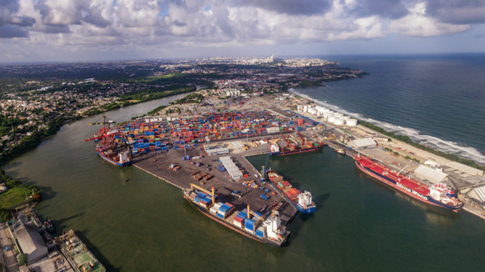
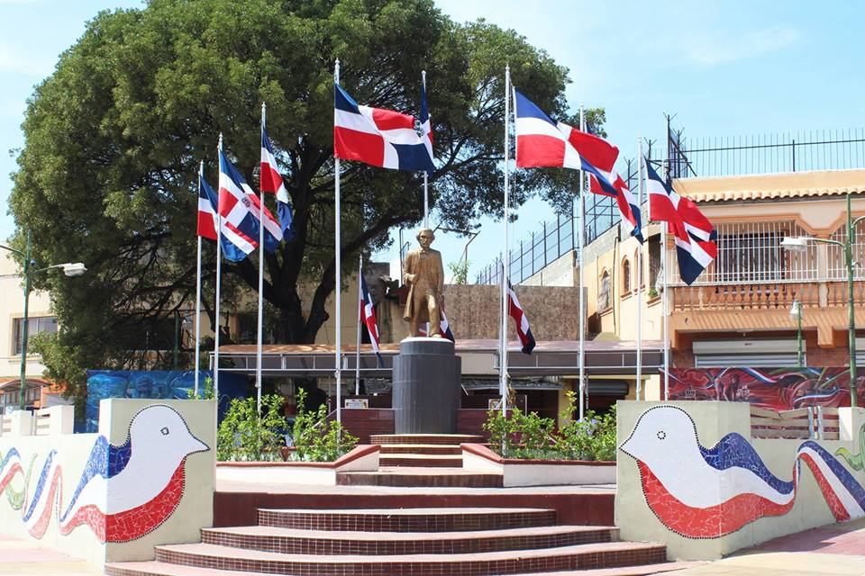

Imágenes representativas del municipio de Bajos de Haina y su desarrollo.
Bajos de Haina es uno de los municipios más importantes de la República Dominicana, reconocido por su actividad industrial y portuaria.

El puerto es un eje clave para el comercio nacional e internacional, impulsando el crecimiento económico de la región.

Haina también representa tradición, orgullo patrio y una comunidad vibrante.

Bajos de Haina continúa creciendo como una de las zonas estratégicas del país. Su puerto, industrias y desarrollo urbano lo convierten en un punto importante para la economía dominicana.
Esta página permite a los ciudadanos y visitantes interactuar mediante comentarios utilizando sus cuentas de Facebook.
Ir a los Comentarios